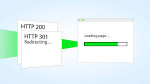
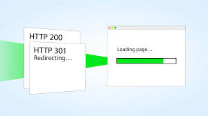
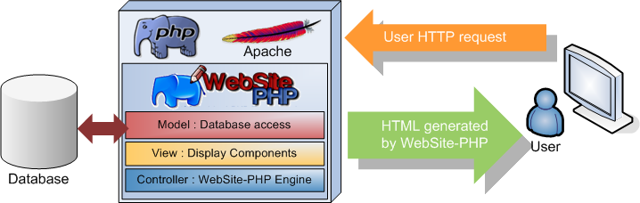

HTTP Request
que es http request para investigar
En miras de una educacion mas avanzada, este sitio fue creado con la finalidad de ilustrar las bases iniciales para programar páginas Web
que es http request para investigar
Investigar que es el Response
